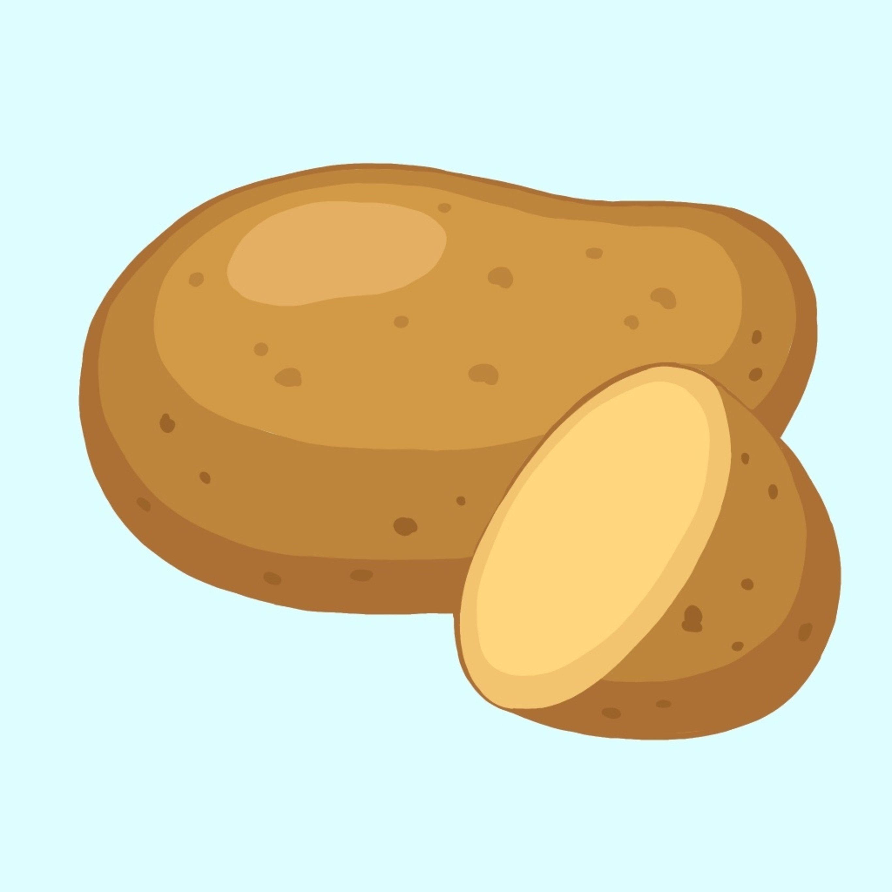

<ion-header [translucent]="true">
  <ion-toolbar>
    <ion-title>
      Potato-Salad
    </ion-title>
  </ion-toolbar>
</ion-header>

<ion-content [fullscreen]="true">
  <ion-header collapse="condense">
    <ion-toolbar>
      <ion-title size="large">Potato-Salad</ion-title>
    </ion-toolbar>
  </ion-header>

  <div id="container">

    

    <ion-item> 
      <ion-label position="floating">Potatoes in gram</ion-label>
      <ion-input (keyup.enter)="presentModal()" [(ngModel)]="potatoes" clearInput="true" autocorrect="on" autofocus="on" color="primary" mode="ios" type="number" required="true"></ion-input>
    </ion-item>

    <ion-button (click)="presentModal()" shape="round" id="calculate">Calculate</ion-button>
  </div>

</ion-content>
